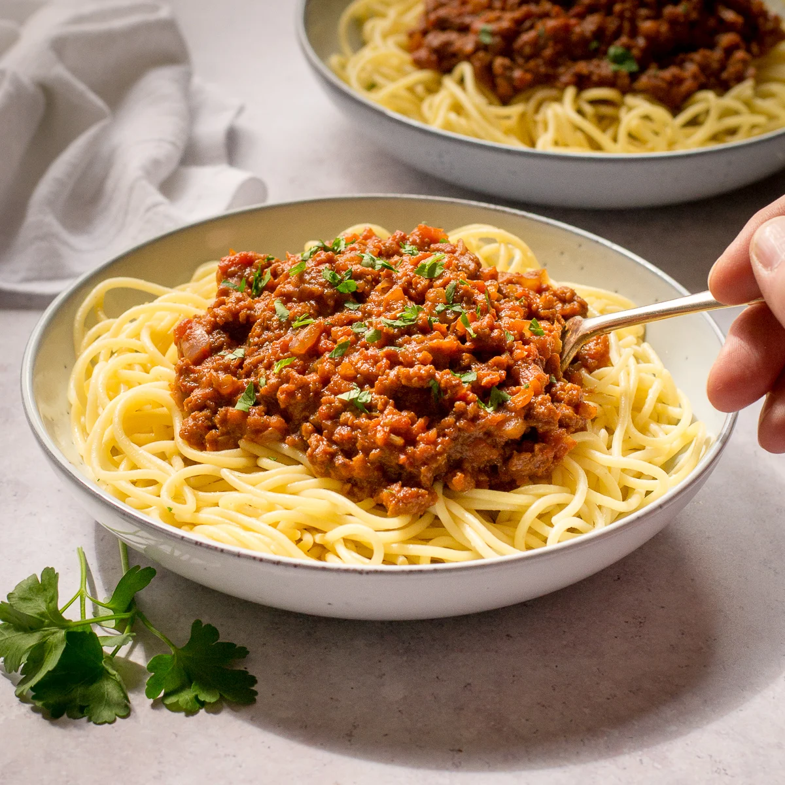

Spaghetti Bolognese

Ingredients:
- 1 pound (450g) ground beef
- 1 medium onion, finely chopped
- 2 cloves of garlic, minced
- 1 medium carrot, finely chopped
- 1 celery stalk, finely chopped
- 1 can (14 ounces/400g) crushed tomatoes
- 2 tablespoons tomato paste
- 1/2 cup beef broth
- 1/2 cup red wine (optional)
- 1 teaspoon dried oregano
- 1 teaspoon dried basil
- 1/2 teaspoon sugar
- Salt and pepper to taste
- 1 pound (450g) spaghetti
- Grated Parmesan cheese (for serving)
- Fresh basil leaves (for garnish)
Steps:
- Heat a large skillet or saucepan over medium heat. Add the ground beef and cook until browned, breaking it up with a spoon as it cooks. Drain any excess fat if needed.
- Add the chopped onion, minced garlic, carrot, and celery to the skillet. Cook until the vegetables have softened, about 5 minutes.
- Stir in the crushed tomatoes, tomato paste, beef broth, and red wine (if using). Season with dried oregano, dried basil, sugar, salt, and pepper. Reduce the heat to low, cover, and simmer for about 30-40 minutes, stirring occasionally to prevent sticking.
- While the sauce simmers, bring a large pot of salted water to a boil. Cook the spaghetti according to the package instructions until al dente. Drain the pasta and set aside.
- Taste the Bolognese sauce and adjust the seasoning if needed. If the sauce is too thick, you can add a little more beef broth or water to reach your desired consistency.
- Serve the cooked spaghetti on plates or in bowls, and ladle the Bolognese sauce over the top. Garnish with grated Parmesan cheese and fresh basil leaves.